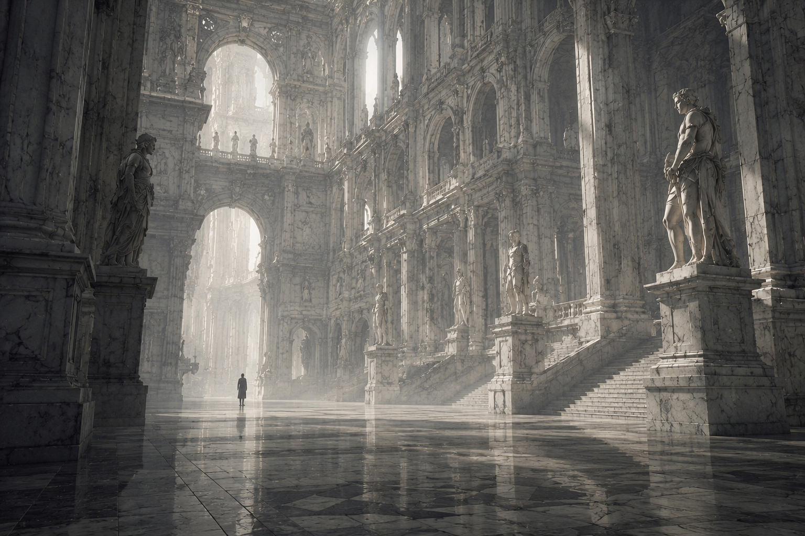
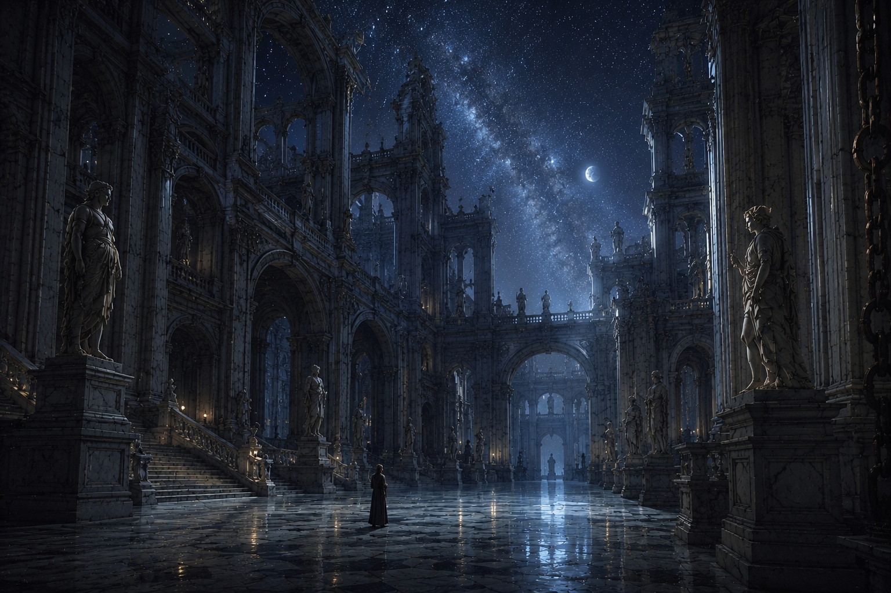

첫번째 기록.
오늘은 폭우가 쏟아져, 물이 조금씩 차오르기 시작했다.

다섯번째 기록.
앨버트로스 한 마리가 날아오른다. 봄이 머지않았다.

스물세번째 기록.
물고기를 잡기 좋은 장소를 발견했다. 조수를 기록해 둔다.

서른여덟번째 기록.
빛이 머무는 낮의 홀 16번째 사람을 만나다.

마흔다섯번째 기록.
은하가 내려앉는 밤의 홀
끝없이 이어지는 홀과 수많은 조각상으로 가득한 집, 피라네시는 그 공간을 탐험하고 기록하는 이야기다. 이 책은 주인공이 자신 외에도 이 공간에 다른 존재가 있을지 모른다는 의문에서 출발한다. 그는 넓은 집의 홀을 탐험하며 다양한 기록을 남긴다. 특히 시간이 지날수록 집의 정체와 다른 사람들, 그리고 의문의 16번째 인물에 대한 궁금증이 커지며 독자의 호기심을 지속적으로 자극한다. 또한 곳곳에 놓인 조각상들은 상상력을 확장시키며 이야기에 대한 궁금증을 더욱 높인다.
이 마이크로사이트는 책의 핵심 요소인 탐험과 기록의 과정을 경험할 수 있도록 설계하였다. 화면에는 집의 공간을 보여주는 이미지를 중심으로 배치하고, 정보는 주인공이 직접 남긴 기록처럼 구성하였다. 또한 하나의 기록을 읽은 뒤 다음 기록으로 이동하는 인터랙션을 적용하여 탐험을 이어가는 흐름을 표현하였다. 레이아웃은 깔끔하게 유지하되 이미지를 적극적으로 활용하여 집의 신비로운 분위기를 강조하고자 하였다. 이를 통해 사용자가 피라네시의 세계를 간접적으로 경험하고, 책에 대한 호기심을 느끼도록 하는 것을 목표로 한다.